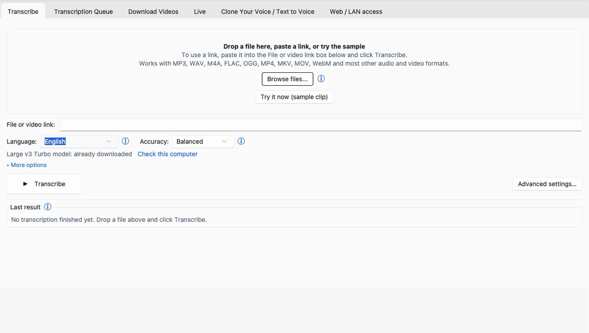

How to convert a video to SRT subtitles for free
A free desktop app you install once (Windows, macOS, Linux). Whisper, the speech-recognition model inside it, runs on your computer, so with the default engines your video is not uploaded.
To convert a video to SRT subtitles, open the Transcribe tab, drop in a video or audio file, check that SRT is ticked under Advanced settings and press Transcribe. Whisper writes the SRT, the common subtitle file format, next to the original file, ready for a player, an editor or an upload. For a link, see the YouTube guide.
Before you start
Downloads are on the home page; requirements are in the install guide. Use the official GitHub releases page only: the installer is not code-signed, so Windows may warn at first launch (More info > Run anyway).
1. Create the SRT
- Open the Transcribe tab and drag your video or audio file onto the window, or click Browse files.... You can pick several files at once.
- Set the Language, or leave Auto to detect it. Picking it yourself is faster and can be more accurate for short or noisy clips.
- Optional: fill in Time range (H:MM:SS) to transcribe only part of the file.
- Choose the subtitle formats. Click Advanced settings… and look for Output formats. SRT plus JSON is the default. Tick VTT (the web subtitle format) for web video, or ASS (styled subtitles / karaoke) if you style subtitles in an editor. Every ticked format is written for every job. Keep JSON ticked: it is a JSON file the app uses to open the transcript viewer.
- Optional: tick Per-word timestamps to store a start and end time for every word; the files get larger. Your SRT cues still follow whole segments, one cue per segment of speech. Word timing is used by VTT and ASS for karaoke-style highlighting.
- Click Transcribe. Follow the job in the Transcription Queue tab. The subtitle file lands beside your original with the same name and a new extension, for example talk.mp4 becomes talk.srt, and the Last result card has an Open button for each file.

Subtitles in another language
For English subtitles from non-English speech, tick Output: English translation; the files get an .en-translated name. It is off by default and does not work with every engine or model. For other languages, an optional AI Tools tab in the transcript viewer can write a bilingual SRT once you set up its AI layer (a local model you install, or an online provider you choose); it is off by default.
2. Correct it (optional)
Open View transcript from the Last result card (it needs the JSON output, ticked by default). Find & Replace and Remove fillers change the text; for line-by-line edits, use any subtitle editor. Right-click a segment and choose Edit timestamp... to change that one segment's start and end; the other segments do not move.
Click Save changes (Ctrl+S): the app saves the transcript, then rebuilds the .srt and the other text files next to it from the edited transcript, replacing them. A file you changed elsewhere is left alone, and the app says it still holds the old text. A PDF is never rebuilt. On Windows, Open in Subtitle Edit opens the subtitle file in that free editor, which has a waveform view for fine-tuning timing.
3. Burn it in (optional)
From a link: keep the mode on Audio and video, tick Make subtitled video and click Download. The app downloads, transcribes and draws the subtitles into a new file named after the video with -subbed.mp4 on the end. The download and the transcript are kept, and an existing -subbed.mp4 is never replaced.
From a file you already transcribed: open the Transcription Queue tab, right-click the finished row and choose Burn subtitles into video.... It needs an SRT, so keep SRT ticked under Output formats. The result is an MP4 that phones, TVs and browsers play. Re-encoding takes a while; how long depends on your computer.
Good to know
- Timing. SRT times follow Whisper's segments. Refine word timings with stable-ts (slower) in Advanced settings is an optional extra step that sharpens word timing; it downloads a component the first time.
- Check before you publish. The app flags repeated or invented lines, but names and numbers still deserve a read.
Questions
Which subtitle formats does it write?
SRT, VTT and ASS, plus TSV, TXT, JSON, LRC, Markdown, DOCX and PDF, and the oTranscribe, ELAN, InqScribe and Express Scribe formats.
How do I add the SRT to YouTube or a video editor?
Upload or import the .srt as a subtitle (caption) file. The app writes it next to your video, with the same name and a .srt ending.
Is my video uploaded?
No, not with the default engines. Two cloud engines exist but stay off until you switch them on yourself, and File → Work offline stops all network use.